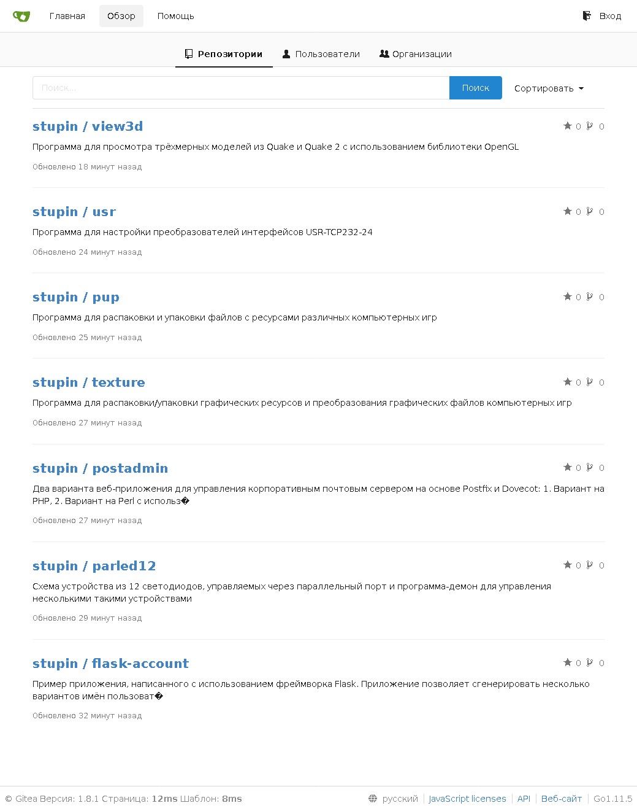

Gitea - это веб-интерфейс для работы с репозиториями git. Приложение является форком приложения Gogs, и как и его родитель, написано на языке программирования Go. Приложение не требовательно к системным ресурсам, поэтому хорошо подходит для организации репозиториев исходных текстов небольших команд разработчиков.
Я собираю приложение на Debian Stretch, в котором имеется компилятор go версии 1.7. Для сборки приложения Gitea версии 1.8.1 потребуется компилятор версии 1.9 или выше. Если попытаться собрать приложение компилятором версии 1.7, то сборка завершится такой ошибкой:
package math/bits: unrecognized import path "math/bits" (import path does not begin with hostname)
Для установки компилятора подходящей версии воспользуемся репозиториями с бэкпортами Debian. На момент написания статьи в репозитории имеется компилятор версии 1.11. Пропишем в файл /etc/apt/sources.list репозиторий с бэкпортами для Stretch:
deb http://mirror.yandex.ru/debian stretch-backports main contrib non-free
Обновим список пакетов, доступных через репозитории:
# apt-get update
Установим свежую версию компилятора языка go из репозитория с бэкпортами:
# apt-get install -t stretch-backports golang-go
Если в системе ещё не установлен пакет git, то установим его:
# apt-get install git
Создадим каталог для сборки приложения и перейдём в него:
$ mkdir ~/gitea $ cd ~/gitea
Скачиваем исходные тексты приложения в созданный каталог:
$ env GOPATH=/home/stupin/gitea/ go get code.gitea.io/gitea
Перейдём в git-репозиторий со скачанными исходными текстами:
$ cd ~/gitea/src/code.gitea.io/gitea
И переключимся на исходные тексты gitea версии 1.8.1:
$ git checkout v1.8.1
Полный список доступных веток и меток релизов можно посмотреть при помощи команд:
$ git branch -a $ git tag -l
Перед тем, как запустить сборку, исправим ошибку в файле Makefile. В этом файле такую строчку:
export PATH := $($(GO) env GOPATH)/bin:$(PATH)
Нужно заменить на вот такую:
export PATH := $(GOPATH)/bin:$(PATH)
Если этого не сделать, то сборка прервётся с таким вот сообщением об ошибке:
modules/options/options.go:7: running "go-bindata": exec: "go-bindata": executable file not found in $PATH modules/public/public.go:20: running "go-bindata": exec: "go-bindata": executable file not found in $PATH modules/templates/templates.go:7: running "go-bindata": exec: "go-bindata": executable file not found in $PATH Makefile:102: ошибка выполнения рецепта для цели «generate» make: *** [generate] Ошибка 1
Собираем приложение:
$ env GOPATH=/home/stupin/gitea TAGS="bindata sqlite sqlite_unlock_notify" make generate build
Тег bindata включает сборку единого двоичного файла, включающего в себя все необходимые зависимости и файлы. Теги sqlite и sqlite_unlock_notify включают поддержку базы данных SQLite3. Описание всех тегов можно найти на странице Installation from source, в разделе Build.
В результате сборки в каталоге ~/gitea/src/code.gitea.io/gitea должен появиться файл с именем gitea.
Создаём пользователя gitea, от имени которого будет работать приложение:
# useradd -c 'Gitea' -r -M -d /opt/gitea gitea
Создаём каталог приложения gitea и копируем в него только то, что необходимо для работы приложения:
# cd /opt # mkdir gitea # cd gitea # cp /home/stupin/gitea/src/code.gitea.io/gitea/gitea .
Создаём каталог для файла конфигурации:
# mkdir -p cusotm/conf/
Создаём файл /opt/gitea/custom/conf/app.ini с настройками приложения:
[server] DOMAIN = stupin.su HTTP_ADDR = 127.0.0.1 HTTP_PORT = 3000 ROOT_URL = https://stupin.su/git/ DISABLE_SSH = false SSH_PORT = 22 OFFLINE_MODE = false
Чтобы настройки приложения в дальнейшем можно было поменять в процессе первоначальной настройки через веб-интерфейс, дадим пользователю gitea доступ к файлу конфигурации:
# chown gitea:gitea /opt/gitea/custom/conf/app.ini
Создаём service-файл /etc/systemd/system/gitea.ini для запуска/остановки приложения через systemd:
[Unit]
Description=Gitea (Git frontend)
After=syslog.target
After=network.target
;After=postgresql.service
After=nginx.service
[Service]
Type=simple
User=gitea
Group=gitea
WorkingDirectory=/opt/gitea
ExecStart=/opt/gitea/gitea web
Restart=always
Environment=USER=gitea HOME=/opt/gitea
[Install]
WantedBy=multi-user.target
Добавляем сервис в автозапуск при загрузке операционной системы:
# systemctl enable gitea.service
И запускаем его прямо сейчас:
# systemctl start gitea.service
Если после запуска сервис переходит в аварийное состояние, стоит заглянуть в журнал /var/log/daemon.log. Поищите сообщение следующего вида:
panic: fail to set message file(en-US): open conf/locale/locale_en-US.ini: no such file or directory
Если такое сообщение есть, то приложение было собрано без тега bindata. Я собирал приложение без этого тега, прежде чем исправил ошибку в файле Makefile. После этого я собрал приложение с тегом bindata, но система сборки не заметила разницы и скомпоновала исполняемый файл из уже готовых объектных файлов. Чтобы очистить имеющиеся файлы и собрать исполняемый файл снова, нужно выполнить следующие команды:
$ cd /home/stupin/gitea/src/code.gitea.io/gitea/ $ env GOPATH=/home/stupin/gitea TAGS="bindata sqlite sqlite_unlock_notify" make clean generate build
Если приложение планируется запускать на выделенном домене, то для настройки проксирования внешних запросов с https на локальный адрес http при помощи nginx в общем случае нужно создать следующую конфигурацию в файле /etc/nginx/sites-enabled/gitea:
server {
listen 80;
server_name example.com;
return 302 https://$server_name$request_uri;
}
server {
listen 443 ssl;
server_name example.com;
ssl_certificate /path/to/certificate.crt;
ssl_certificate_key /path/to/certificate_key.key;
location / {
proxy_set_header X-Real-IP $remote_addr;
proxy_pass http://localhost:3000;
}
}
И подключить её командой:
# sudo ln -s /etc/nginx/sites-available/gitea /etc/nginx/sites-enabled/gitea
Я же разместил приложение на одном домене с другими приложениями, в отдельном каталоге. Для настройки впишем в файл /etc/nginx/sites-enabled/root настройки проксирования запросов с адреса https://stupin.su/git/ на адрес http://127.0.0.1/git/:
# Gitea
location /git/ {
proxy_redirect off;
proxy_bind 127.0.0.1;
proxy_set_header Host $host;
proxy_set_header X-Real-IP $remote_addr;
proxy_pass http://127.0.0.1:3000/;
}
Переходим по ссылке https://stupin.su/git/install и задаём настройки:
Настройки базы данных
Тип базы данных: SQLite3
Путь: /opt/gitea/data/gitea.db
Основные настройки
Название сайта: Исходные тексты программ Владимира Ступина
Путь корня репозитория: /opt/gitea/gitea-repositories
Корневой путь Git LFS: /opt/gitea/data/lfs
Запуск от имени пользователя: gitea
Домен SSH сервера: stupin.su
Порт SSH сервера: 22
Gitea HTTP порт: 3000
Базовый URL-адрес Gitea: https://stupin.su/git/
Путь к журналу: /opt/gitea/log
Расширенные настройки
Настройки Email
Узел SMTP: mail.stupin.su:587
Отправлять Email от имени: gitea@stupin.su
SMTP логин: gitea@stupin.su
SMTP пароль: mailbox_password
Требовать подтверждения по электронной почте для регистрации: Да
Разрешить почтовые уведомления: Да
Сервер и настройки внешних служб
Включить локальный режим: Нет
Отключить Gravatar: Да
Включить федеративные аватары: Нет
Включение входа через OpenID: Нет
Отключить самостоятельную регистрацию: Да
Разрешить регистрацию только через сторонние сервисы: Нет
Включить саморегистрацию OpenID: Нет
Включить CAPTCHA: Нет
Требовать авторизации для просмотра страниц: Нет
Скрывать адреса электронной почты по умолчанию: Нет
Разрешить создание организаций по умолчанию: Да
Включение отслеживания времени по умолчанию: Да
Скрытый почтовый домен:
Настройки учётной записи администратора
Логин администратора: stupin
Пароль:
Подтвердить пароль:
Адрес эл. почты: vladimir@stupin.su
После сохранения этих настроек файл /opt/gitea/custom/conf/app.ini примет следующий вид:
APP_NAME = Исходные тексты программ Владимира Ступина RUN_USER = gitea RUN_MODE = prod [server] DOMAIN = stupin.su HTTP_ADDR = 127.0.0.1 HTTP_PORT = 3000 ROOT_URL = https://stupin.su/git/ DISABLE_SSH = false SSH_PORT = 22 OFFLINE_MODE = false SSH_DOMAIN = stupin.su LFS_START_SERVER = true LFS_CONTENT_PATH = /opt/gitea/data/lfs LFS_JWT_SECRET = xxx [oauth2] JWT_SECRET = xxx [security] INTERNAL_TOKEN = xxx INSTALL_LOCK = true SECRET_KEY = xxx [database] DB_TYPE = sqlite3 HOST = 127.0.0.1:3306 NAME = gitea USER = gitea PASSWD = SSL_MODE = disable PATH = /opt/gitea/data/gitea.db [repository] ROOT = /opt/gitea/gitea-repositories [mailer] ENABLED = true HOST = mail.stupin.su:587 FROM = gitea@stupin.su USER = gitea@stupin.su PASSWD = mail_password [service] REGISTER_EMAIL_CONFIRM = true ENABLE_NOTIFY_MAIL = true DISABLE_REGISTRATION = true ALLOW_ONLY_EXTERNAL_REGISTRATION = false ENABLE_CAPTCHA = false REQUIRE_SIGNIN_VIEW = false DEFAULT_KEEP_EMAIL_PRIVATE = false DEFAULT_ALLOW_CREATE_ORGANIZATION = true DEFAULT_ENABLE_TIMETRACKING = true NO_REPLY_ADDRESS = [picture] DISABLE_GRAVATAR = true ENABLE_FEDERATED_AVATAR = false [openid] ENABLE_OPENID_SIGNIN = false ENABLE_OPENID_SIGNUP = false [session] PROVIDER = file [log] MODE = file LEVEL = Info ROOT_PATH = /opt/gitea/log
Теперь для пущей безопасности, чтобы никто не подсмотрел в файле пароль почтового ящика mailbox_password и ключи xxx, которыми шифруются сеансовые данные, поменяем права доступа к файлу конфигурации:
# chmod ug=r,o= /opt/gitea/custom/conf/app.ini
Пример страницы обзора списка репозиториев:
